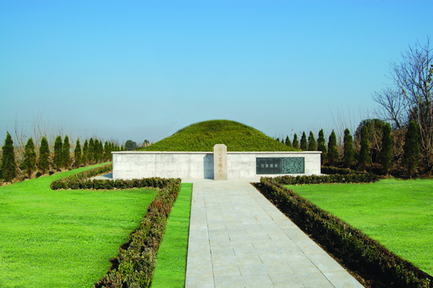

嘉兴市文物保护网 · 市级文物保护单位 · 2014-06-16 · 原文

沈曾植墓位于嘉兴市秀洲区王店镇太平桥村9组沈宦墓地，共有四座，墓丘呈圆形，坐北朝南，总占地面积约600平方米，自西向东依次分布着沈曾植、沈曾植祖父沈维鐈，沈曾植父沈宗涵和沈宗涵女儿的坟茔。沈曾植墓高2.7米，直径4米，沈维鐈墓高2.7米，直径4米，沈宗涵墓高2.3米，直径3.15米，沈宗涵女儿墓高1.8米，直径3米。墓地四角原立有界桩，现仅存一块，上刻正楷“沈宦坟界”，石桩高1.65米，宽0.325米。2009年，沈曾植墓经过修葺，面貌焕然一新，神道直通墓地，四周松柏挺立，墓丘圆整划一。沈曾植为清末大儒，在儒学、法学、史学、音乐、书法等方面都有很高造诣，在国内国际具有广泛影响，其墓作为研究其生平的实物见证，对于纪念沈曾植有重要意义，有很高的历史价值。1981年公布为嘉兴市级文物保护单位。